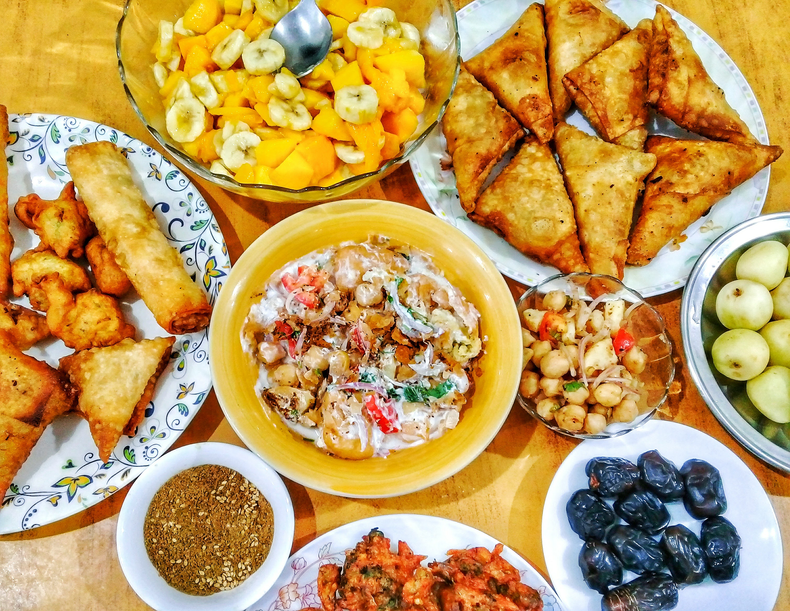

What is Ramadan?
Ramadan is the most scared month of the Islamic Calendar(its different than a Gregoriam Calendar, it is based on the lunar system). It starts and ends with the sighting of the new crescent moon, therefore it can be either 29 or 30 days and this timing is differs from year to year. During this holy month we fast everyday from dawn to sunset. We start our fasting with a meal before dawn called suhoor. Usually this is something that should sustain you throughout the day. this helps with our fast. When the sunsets its time to break our fast and this meal is called iftaar.
Examples of Suhoor

- High Fiber Carbohydrates
- Proteins
- A lot of Water
Examples of Iftaar(*dependent on culture)
- Appetizers
- Main dish
- sides
- non alcoholic drinks
- desserts
- and ofcourse tea or coffee at the end
This special month is not just about going hungry. There is something important about this month and we miss it when its gone. It is amazing that tens of millions of muslims around the world give up food and drink for the sake of God(Allah). According to the Quran(our holy book)fasting was prescribed to Muslims so taht they can be conscious of God. It allows us to devote ourselves to our faith and also brings us close to God. It is a time to reflect and spend with family and loved ones. We show genrosity and kindness by increasing ourselves in sadaqa which is charity in form of money , time, food or even our actions.
What is Eid al Fitr?
When the new moon is sighted again it marks the end of Ramadan and the holy festival of Eid al Fitr begins. It is like Christmas for us. We start it off with a special prayer that is usually held in congregation, becase of covid this year it was held at Quenny Park to stay in compliance with CDC guideline. We exchange gifts and its a day of feasting and celebration.